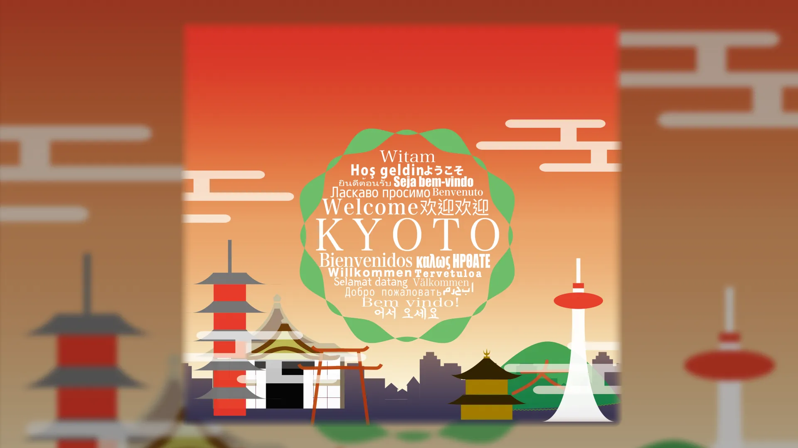
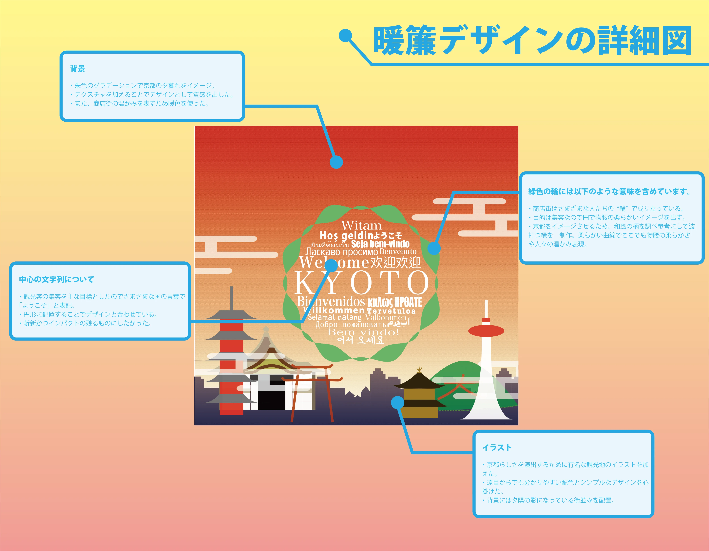
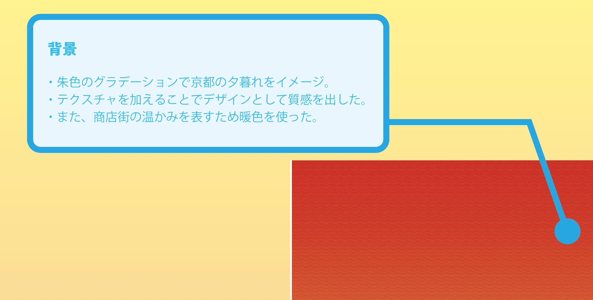
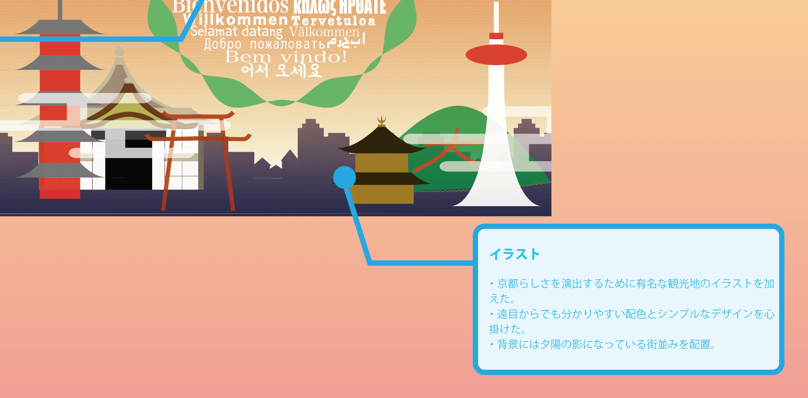
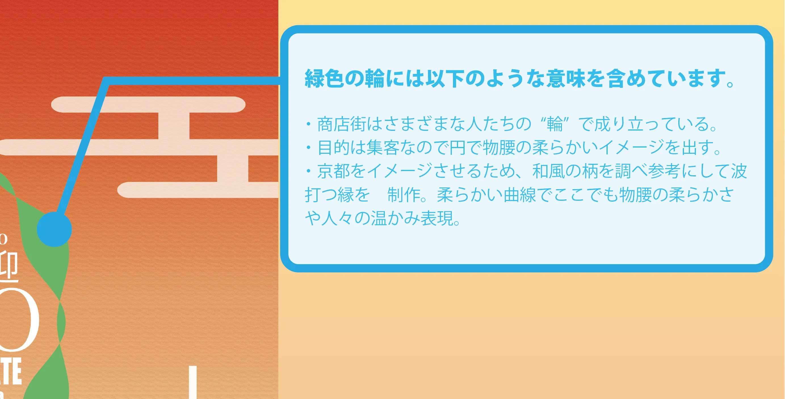
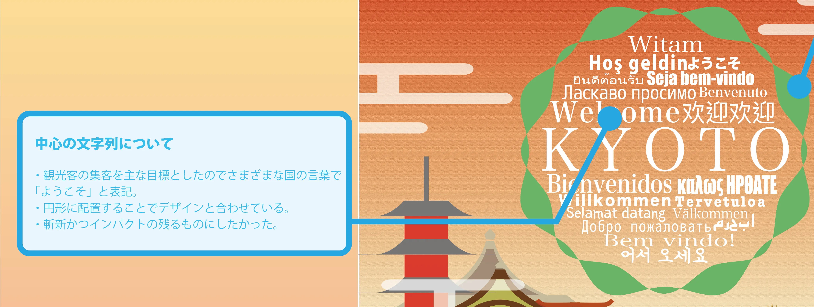

Design / 3D Animation
YOKOSO KYOTO NOREN
Graphic Design / Product Design / 3D Camera
2023.2 - K展出展作品 "YOKOSO KYOTO NOREN"
コンセプトは「おもてなし」。京都に来る外国人がターゲット。商店街のアーケードに吊るす想定の暖簾で、京都らしさと商店街の温かみを演出している。
「商店街の人々の温かみに触れ、京を好きになってほしい」という思いが込められている。
Production Process
学校の学年末に行われる展示会に出展するものとして制作。ターゲットを外国人観光客として制作を進行した。京都市の来客データや、街の見どころ、衰退していると感じるエリアなどを調査し、商店街という結論に至った。

デザイン詳細図
京都市内の観光地に使われているデザインなどを参考に、Adobe Illustrator で表現。

背景
朱色のグラデーションで京都の夕暮れをイメージ。
テクスチャを加えることでデザインとしての質感を出した。
商店街の温かみを出すために暖色を採用。

イラスト
京都らしさを演出するために有名な観光地のイラストを描いた。商店街のアーケードにつるす形を想定しているので、遠くからでもわかりやすい配色とシンプルなデザインを心掛けた。
背景には夕日の陰になっている街並みを配置。

緑色の輪
商店街は様々な人たちの"輪"で成り立っていることを表現。目的は集客でもあるため、円で物腰の柔らかいイメージを出すことに。
京都らしさを出すために、和柄モチーフの波打つ円に。柔らかい曲線のシルエットで物腰の柔らかさや人々の温かみを表現。

中心の文字
どんな国の観光客でも「おもてなし」を忘れない日本人のすばらしさを、様々な国の言葉で「ようこそ」を記載することで表現している。テキストの集合体というだけでインパクトがあるためこのデザインのメインである。

3D Cameraで想定を可視化
現実でどのようになるかを3Dカメラを用いて再現。
Production Credit
題名 | Title
K展出展作品 "YOKOSO KYOTO NOREN"
製作 | Create
近藤 嗣春
支援者 | Special Thanks
京都芸術デザイン専門学校
製作ツール | Tools
◽️映像 | Movie - AviUtl
◽️デザイン | Design - Adobe Illustrator, Photoshop
出展 | Exhibition
K展 ~社会連携展~ 京都芸術デザイン専門学校